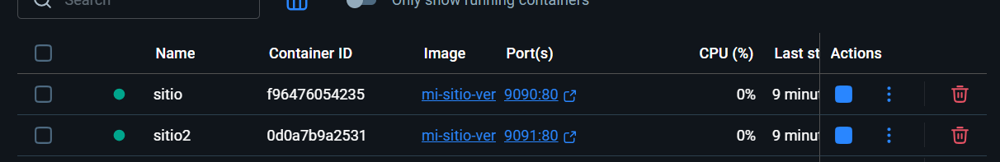
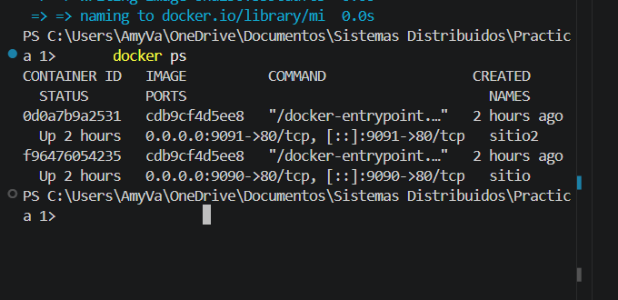
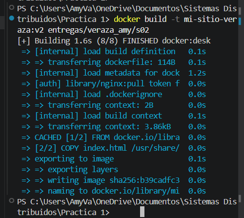

Hola, soy Amy Veraza
Esta pagina forma parte de mi practica de la sesion 02 de Sistemas Distribuidos. La estoy sirviendo desde un contenedor construido con Docker.
Comandos que mas me ayudaron
| Comando | Que hace |
|---|---|
docker pull nginx:alpine |
Descarga la imagen base que use para levantar el servicio web. |
docker build -t mi-sitio . |
Construye mi imagen usando el Dockerfile y el archivo HTML. |
docker run -d -p 9090:80 --name sitio mi-sitio |
Inicia un contenedor y publica el puerto para verlo desde el navegador. |
docker ps |
Muestra que contenedores estan corriendo en ese momento. |
docker exec -it sitio sh |
Permite entrar al contenedor para revisar archivos o comandos desde dentro. |
Version 2: agregue esta nota despues del primer build para comprobar que los cambios no aparecen en el contenedor hasta reconstruir la imagen.
Evidencias
Aqui voy a colocar las capturas que muestran la construccion y ejecucion de los contenedores.
Captura 1. Verificacion de Docker.

Captura 2. Contenedores corriendo en puertos 9090 y 9091.

Captura 3. Informacion general del contenedor.

Captura 4. Levantamiento del sitio.
